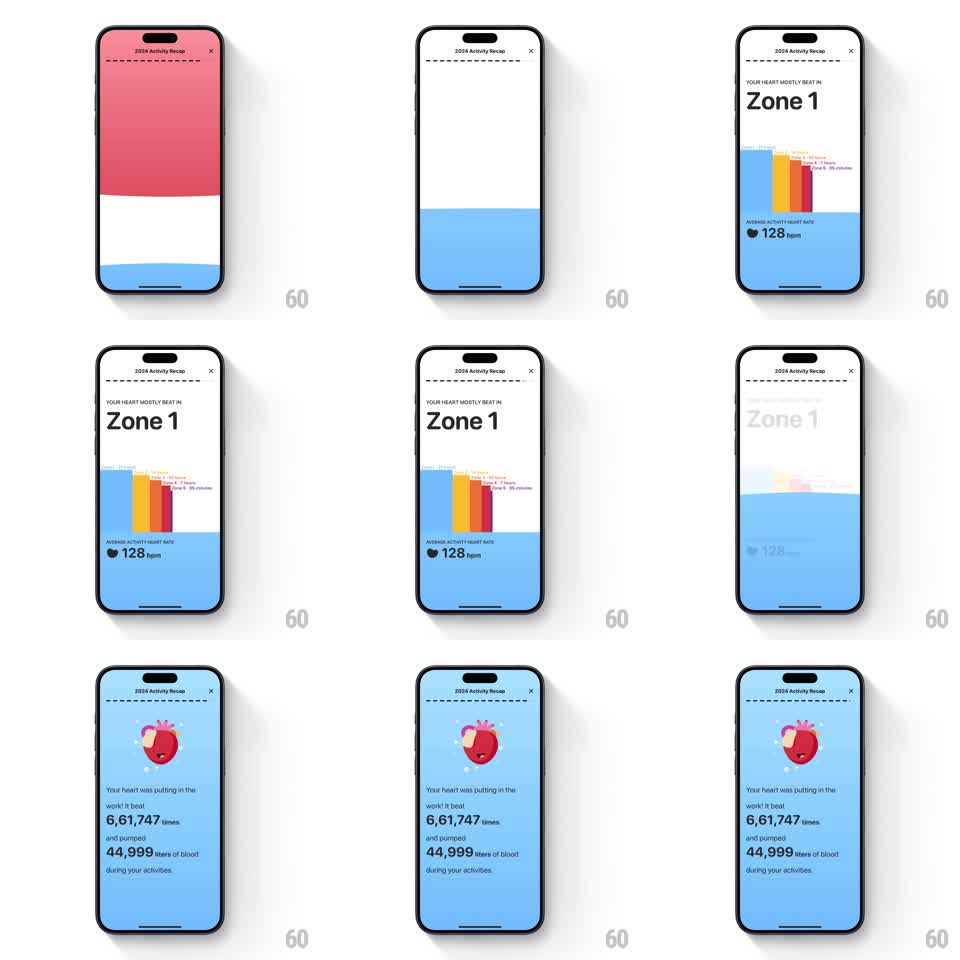

Media
Frame-by-frame

Rebuild this animation 1:1: Gentler Streak's heart recap - a zone bar chart staggers up with its bpm readout, then the scene washes to a full-bleed blue card where the heart mascot beats over the year's totals.

Rebuild this animation 1:1: Gentler Streak's heart recap - a zone bar chart staggers up with its bpm readout, then the scene washes to a full-bleed blue card where the heart mascot beats over the year's totals. ## Integration Integration: stack-agnostic spec - springs given as stiffness/damping, timed motions as duration + curve; map every value to your framework and animation library of choice. ## Scene Two beats. First: "YOUR HEART MOSTLY BEAT IN - Zone 1" with a small bar chart of colored zone bars and "AVERAGE ACTIVITY HEART RATE - 128 bpm" over a white-to-blue banded background. Second: full-blue screen with a 3D heart mascot wearing a sweatband, and copy: "It beat 6,61,747 times and pumped 44,999 liters of blood during your activities." ## Motion spec Pattern: staggered chart then full-bleed wash, ~2.5s. - Background bands slide in (pink over white over blue, 300ms each, bottom-up stagger). - The zone bars rise from the chart baseline with a 80ms stagger (each 300ms, ease-out), their zone labels fading in as each bar lands; "Zone 1" and the bpm readout fade up with the chart. - Transition: the blue bottom band expands upward to flood the screen (400ms, ease-in-out), carrying the old content off the top. - The heart mascot pops in (scale 0.5 to 1, spring stiffness 340 damping 13) and starts beating (scale 1 to 1.12 and back, 900ms loop with a two-thump rhythm). - The copy lines fade and rise beneath it (250ms each, 120ms stagger), the big numbers rolling up to their totals (800ms, ease-out). ## Calibration - The heart's beat is a lub-dub - two quick swells per cycle, not a single pulse. - The blue flood originates from the existing blue band - the background itself becomes the next scene. ## Reduced motion Scenes crossfade; heart static. ## Don't miss - The sweatband on the heart - it is the joke that this heart worked out. - The numbers use the Indian digit grouping as displayed (6,61,747) - match the source formatting.